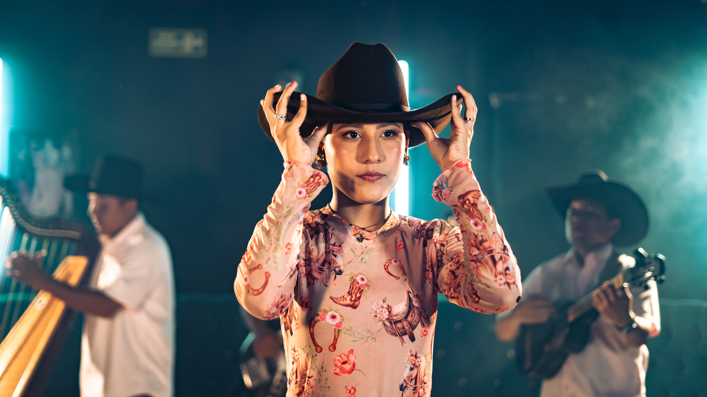

Karol Quintana
Joven promesa y embajadora del folclor llanero colombiano. Con tan solo 15 años y más de 7 años de formación continua en técnica vocal y música tradicional, Karol Quintana cautiva al público nacional con su fuerza interpretativa, timbre recio inconfundible y profundo amor por las raíces del llano metense.
Reseña Biográfica
La historia y legado folclórico de una artista nacida para cantar con el alma llanera
Orígenes y Herencia
Nacida en Villavicencio el 1° de mayo de 2010, hija de Patricia Quintana y José Moreno, oriundos del llano metense. Cuenta con el apoyo incondicional de su hermano Yilber Quintana. Sus raíces provienen de su abuela Ruth Meneses (costas del Ariari) y su abuelo Otoniel Quintana (San Juan de Arama), quienes le inculcaron desde su más tierna infancia la devoción y el respeto por el folclor y la cultura de la tierra plana.
Formación & Disciplina
Desde los 7 años, Karol descubrió su pasión por el canto e inició su formación en técnica vocal bajo la guía de la destacada profesora Eliana Barrera Riveros en Puerto López, Meta, a través de los procesos culturales de IMDERCUT. Actualmente cursa el grado 11° en el Colegio Santa Teresa de Pachaquiaro, combinando su formación académica con su consagración musical.
Habilidades Artísticas
Evaluación de aptitudes tradicionales del folclor llanero
Potencia vocal, entonación, modulación bravía y sentimiento criollo en el escenario.
Acompañamiento armónico y rítmico tradicional en los diversos golpes del joropo.
Zapateo, escobillao y expresión corporal que refleja la elegancia y vigor del llano.
Producción Discográfica
Sencillos musicales de la autoría de Eliana Barrera Riveros grabados en Cumaral, Meta
La Más Taquillera
Autora: Eliana Barrera Riveros
Grabación: DH Studios (Cumaral, Meta)
Agrupación: Cuerdas al Galope
Prometí Volver Al Llano
Autora: Eliana Barrera Riveros
Grabación: DH Studios (Cumaral, Meta)
Agrupación: Cuerdas al Galope
Mujer Llanera
Autora: Eliana Barrera Riveros
Grabación: DH Studios (Cumaral, Meta)
Agrupación: Cuerdas al Galope
Agrupación Cuerdas al Galope & DH Studios
Arpa
Rafael "Nano" Robayo
Cuatro
Alex Romero
Bajo
Adrián Ariza "Popeye"
Maracas e Ing. Grabación
Diego Hernández
Palmarés y Reconocimientos
Premios obtenidos en los principales certámenes folclóricos y festivales del país
Festival del Retorno en Acacías
Galardonada con el 1er puesto por su sobresaliente fuerza interpretativa, autenticidad vocal y devoción por la tradición llanera.
21° Concurso Nuevos Valores del Folclor Llanero
Ganadora en la modalidad Voz Recia Femenina (Categoría B), consolidándose como la voz juvenil más impactante del certamen.
19° Concurso Nuevos Valores del Folclor Llanero
Distinción en la modalidad Voz Recia Femenina representando a la Casa de la Cultura de Puerto López.
Concurso Regional "Nuestras Voces"
Reconocimiento otorgado por su destacada participación vocal en las ediciones 5° y 6° del festival intercolegiado.
Semana de la Juventud
Homenaje por su talento, participación y excelente desempeño cultural representando al municipio a nivel departamental y nacional.
Instituto Departamental de Cultura del Meta
Acreditación de trayectoria artística en el área de música tradicional llanera expedida por la Gobernación del Meta.